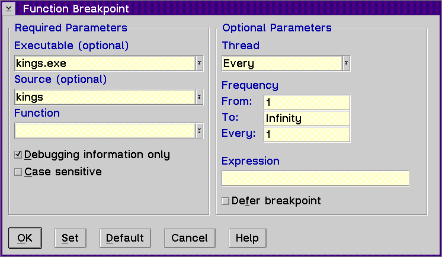

Displays the Function Breakpoint window, which allows you to set a function breakpoint to stop the execution of your program when the first instruction of the function is encountered where the breakpoint has been set.

The entry fields in this window are the same as in the Line Breakpoint window except for the following:
Type the name of the function where you want to set the breakpoint or select a function from the Function list. To select a function, do the following:
Enable this check box if you want to search only the object files that contain debugging information.
Enable this check box if you want to search for the string exactly as typed. Disable this check box if you want to search for both uppercase and lowercase characters.
For a description of the types of data you can enter in the entry fields under the Optional Parameters group heading, refer to Set line....